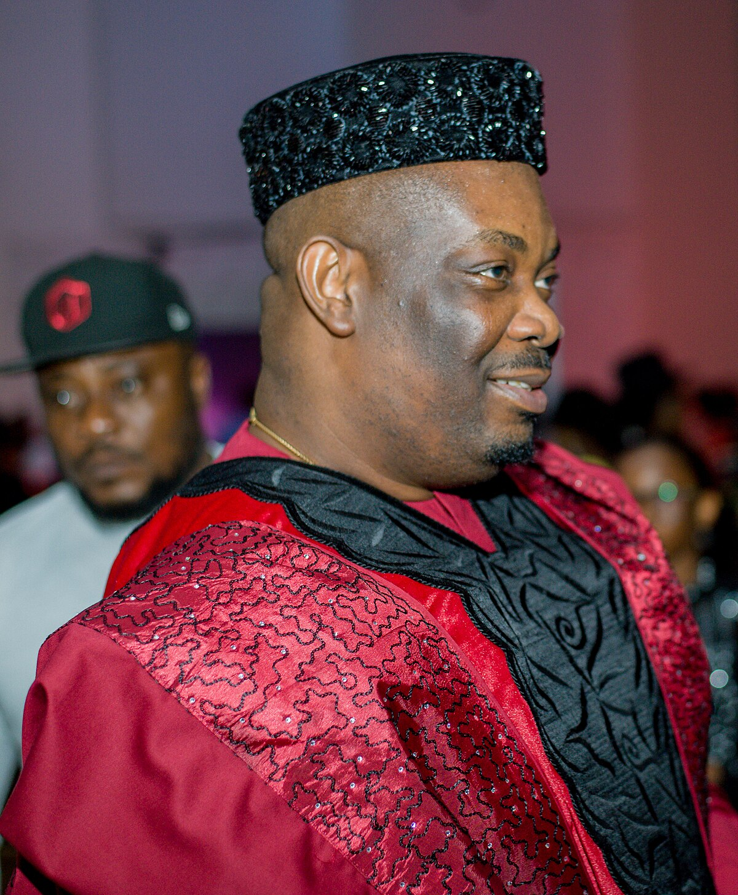
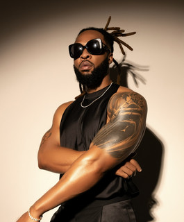
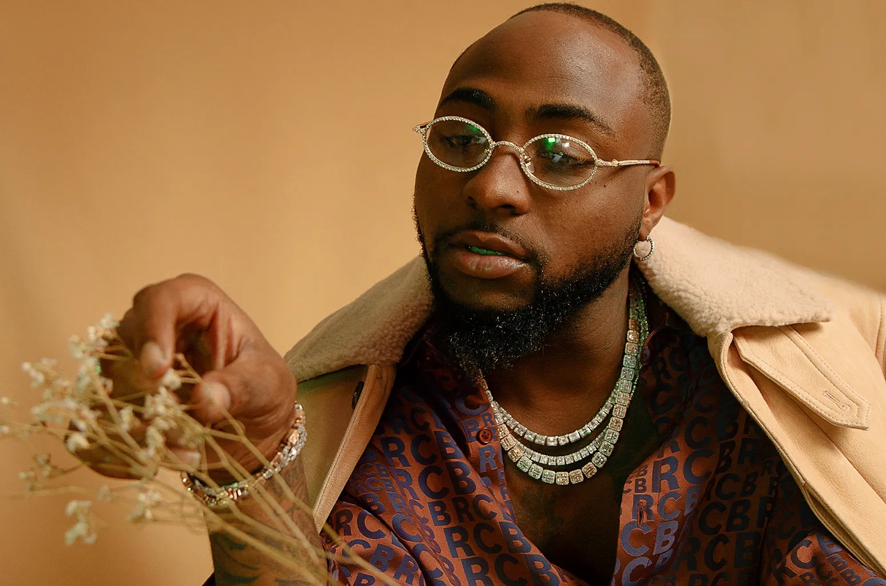
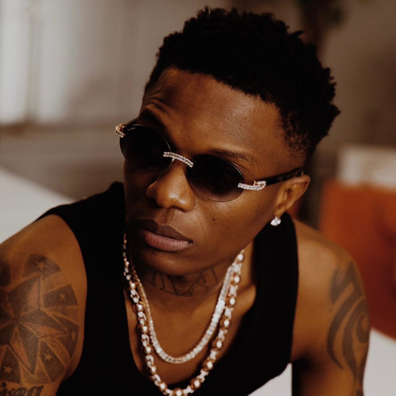
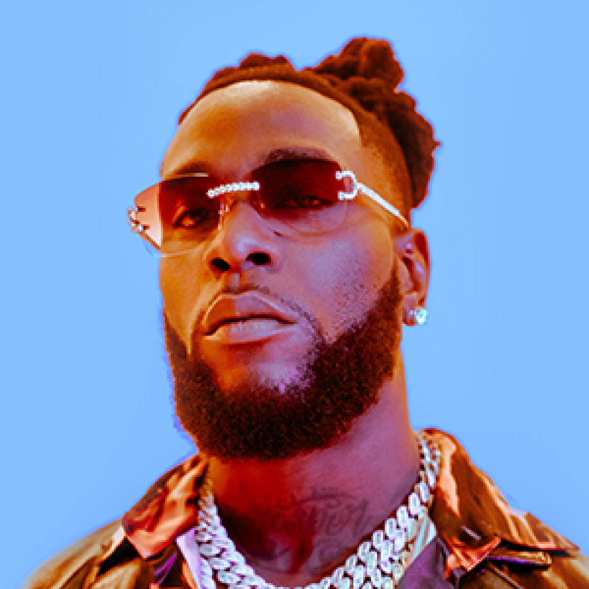
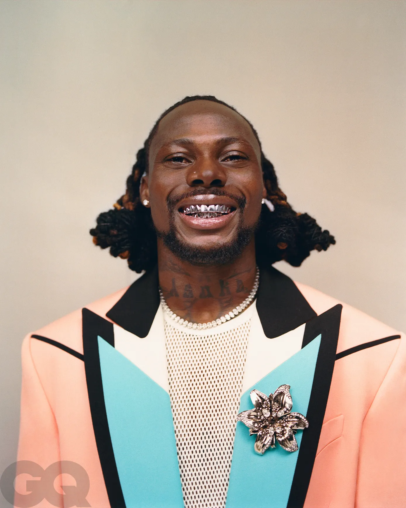
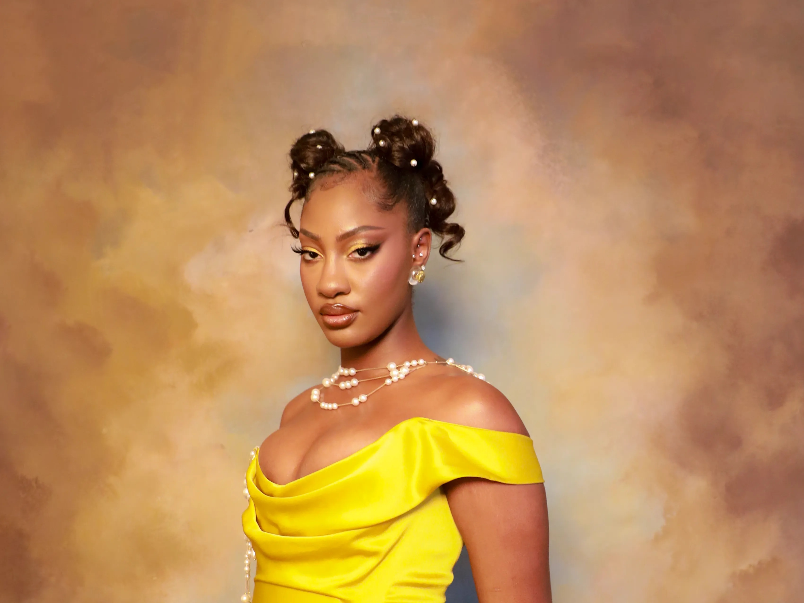

Afrobeats Generations
Foundational Artists
Don Jazzy
Don Jazzy is one of the most sensational producers in the Afrobeats game. He is not just a hitmaker but a master of crafting phenomenal beats and producing some of the genre's most iconic songs. As the godfather of modern Afrobeats and founder of Mavin Records, Don Jazzy has helped launch the careers of superstars like Rema and Ayra Starr. His voice is so distinct that fans instantly recognize it. Since the 2000s, he has contributed to many major hits and worked with numerous artists featured on this list.

P-Square
P-Square is one of the most iconic duos in Afrobeats. Comprised of twin brothers Peter and Paul Okoye, they brought global attention to the genre with their catchy melodies, electrifying performances, and songs about love and celebration. Despite being veterans in the game, they remain relevant and beloved across Africa. They've blended R&B, pop, and Afro rhythms to help define an entire era of music.
Flavour
Flavour is a pioneer whose voice is instantly recognizable and known for melting hearts. He blends the nostalgic highlife sound of the 1920s with modern flair, creating unforgettable tracks that bridge generations. His music mixes traditional Igbo rhythms with romance and gospel elements, and he often uses his platform to praise and uplift.

Icons in a League of Their Own
Davido
The son of a billionaire, Davido broke expectations by pursuing music instead of following a corporate path. His drive and passion made him a global Afrobeats ambassador. With his infectious charisma and countless hits, he's played a crucial role in bringing Afrobeats to stadiums and arenas around the world.

Wizkid
Wizkid is the golden boy of Afrobeats. His smooth, effortless style and global collaborations with artists like Drake and Beyoncé have helped take the genre to new heights. Despite his international success, he remains grounded in his Nigerian roots, which makes his sound authentic and unforgettable.

The New Wave
Burna Boy
Burna Boy, also known as the African Giant, is a dynamic force in modern Afrobeats. He effortlessly blends Afro-fusion with reggae, dancehall, and hip-hop. His lyrics are powerful, and his Grammy win was not just for him, but for the entire continent. Burna's versatility is a testament to the genre's global evolution.

Rema
Rema is the future of Afrobeats. Young and versatile, he has experimented with hip-hop, pop, and even rock, all while proudly representing Benin City, Nigeria. His global anthem "Calm Down" has been played at world events, making him one of the most recognizable new stars in music.

Asake
Asake stormed the scene with his chant-like vocals and explosive energy. He blends the traditional Fuji sound with South Africa's amapiano style, creating high-octane tracks that dominate dance floors. His music ignites adrenaline and celebrates African culture with every beat.

Tems
Tems brings a soulful, ethereal sound that has redefined the boundaries of Afrobeats. Blending R&B with Afro rhythms, her Grammy-winning music captures raw emotion and introspection. Her unique voice and songwriting have introduced Afrobeats to new audiences while keeping its cultural essence alive.
